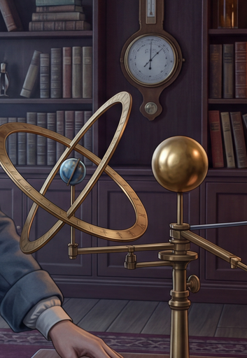

Arena 2026-04-17-L09-S04 — Multi-factor experiment
Victorian laboratory orrery · 6 generations · ref-strategy × crop-size matrix · Spawned L12, narrowed L09, LV 2.3 → 2.4
🕵️ adversarial-valid · Overall: FINDINGS (not pass/fail)
H1/H2/H3 PASS · H4 PARTIAL · Skeptic: act on H1+H3, create L12 pending (NOT count as validation), hold on H4 + arena-prompt changes
Why this trial ran
Human review of S03's PASS revealed a blindspot: the crop-ref shot locked the Aztec headdress but completely re-imagined the surrounding plaza (different buildings, missing pyramid, different crowd — despite identical prompt). S04 was designed as a 6-gen multi-factor experiment to test whether dual-ref (crop + full-scene) resolves this tradeoff — and whether crop resolution matters.
6 generations + source
Source · Shot 1

baseline scene · crops extracted from this
Crop-small (353×512)

low-res ref
Crop-large (2048×1834)

high-res ref
The 5 hero-shot variants (identical prompt, only ref varied)
3A-small · crop-only

D3 = 0.250 (worst)
3A-large · crop-only

D3 = 1.500
3B · full-only

D3 = 1.875
3D-small · dual-ref 🏆

D3 = 2.000 (winner)
3D-large · dual-ref

D3 = 1.667
Hypothesis verdicts
| Hypothesis | Verdict | Evidence |
|---|
| H1 · Crop-only sacrifices scene context | PASS | 3A-small D2=0.0, 3A-large D2=1.5, both < 3B D2=3.0 |
| H2 · Dual-ref wins composite | PASS (fragile) | 3D-small D3=2.000 vs 3B D3=1.875 — margin rests on single half-point call |
| H3 · Larger crop → better target fidelity | PASS | 3A-large D1=4.0 vs 3A-small D1=1.0 (dramatic gap) |
| H4 · Dual-ref robust to crop size | PARTIAL | D1 robust (both 4.0) but D2 gap: 3D-small=3.0 vs 3D-large=2.0 · possibly stochastic (N=1) |
Unexpected interaction: In single-ref (3A), larger crop wins. In dual-ref (3D), smaller crop slightly wins. Skeptic: "large crop may compete with full-scene ref for model's reconstruction capacity."
🕵️ Skeptic's 3 flags
1. Runner drift from spec: crop-small contained the barometer in upper ~25% (not isolated as specified). This happens to strengthen H1 but diverges from the test design. Spec compliance lesson.
2. H2 margin fragile: if Judge's F4 half-point call had resolved as tie, 3B ties 3D-small at D3=2.000 and H2 drops to PARTIAL. L12's justification weakens but doesn't disappear.
3. H4 is single-gen noise: the SE2 sconce dropout in 3D-large is N=1 evidence — needs 1-2 repeat runs before arena guidance about crop-size interaction.
System actions taken
✅ Acted on now (confident findings)
- Created L12 (dual-ref for context) · pending 0/3 · origin = arena:S04 · NOT counted as validation pass per Skeptic
- Narrowed L09 with "Scope limits" section: crop-only insufficient when shot wider than crop; added crop-resolution sub-rule (crop long-side ≥ ½ output long-side)
- Cross-referenced L09 ↔ L12 (complementary lessons)
- Updated SKILL.md level: 2.3 → 2.4
- CHANGELOG entry documenting the methodology finding
🟡 Held (need more evidence)
- L12 validation still requires S05+ with axis-distinct scenario showing Pass
- H4 finding → NOT adding arena Skeptic Q4 side-effect check yet · needs replication
- 3D-small vs 3D-large crop-size preference → marked "tentative" in L12 body
🧠 Meta: Why this matters for the arena system itself
This trial demonstrates the full self-improving loop working end-to-end:
- S03 passed validation of L09 per its criteria.
- Human review caught a blindspot the criteria didn't measure (scene drift).
- S04 was designed specifically to test whether the blindspot points to a real limitation.
- Skeptic voided the temptation to over-claim on N=1 findings — marked L12 as pending, not validated.
This is exactly what "self-improving with anti-Goodhart safeguards" means in practice: the system validated L09 honestly, found its limitation through continued scrutiny, and refused to over-claim the fix is validated until more evidence arrives.